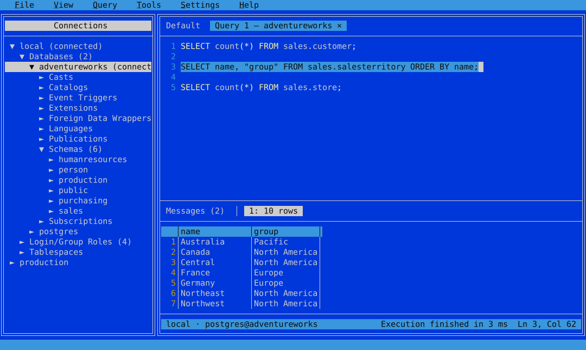

Getting started
From the source code to your first query: build pgtc, start it, save a connection, look around and run a statement.
1. Build pgtc
pgtc is distributed as source. You need Rust; the exact toolchain version is
pinned in the file rust-toolchain.toml and installed by rustup automatically. You need no C
compiler and no PostgreSQL client library.
git clone https://github.com/pokrad/pgtc.git
cd pgtc
cargo build --releaseThe program is then target/release/pgtc (pgtc.exe on Windows). It is one file: copy it
wherever you like. Or let Cargo install it into ~/.cargo/bin, which is normally on your PATH:
cargo install --path crates/pgtcTo use pgtc on a server over SSH, build (or copy) it on that server and start it there. It then runs next to the database and only the screen travels over SSH.
2. Run the setup once
pgtc --setupThis runs every installation step and prints one line per step. Today there is one step: it copies the developer templates that come with pgtc into your user folder. Without it everything works except F7, which then says No developer templates — run Settings → Install templates.
You can do the same later from inside the program: .
3. Start pgtc and save a connection
pgtcThe first time, the object tree on the left is empty. Save your first server:
- Press F9 to open the menu bar. The menu opens; its first item is — press Enter.
- Fill in the dialog. Move between the fields with Tab and Shift+Tab.

The New connection dialog. - Name — your name for the server; it is what the tree shows.
- Host, Port — where the server listens (
localhost,5432). - Maintenance DB — the database pgtc connects to first to list the others; normally
postgres. - User name, Password.
- Save password — check it (with Space) to have the password written to PostgreSQL's password file, so you are not asked again.
- Press Enter on OK. The server appears in the tree.
- With the cursor on the server, press F2 and choose (or use ). The server row changes to (connected) and opens: you see Databases, Login/Group Roles and Tablespaces.
All of this is explained in detail in Connections.
Or: start with the connection on the command line
pgtc takes the same connection options as psql:
pgtc -h localhost -U postgres adventureworksThe connection is saved (if you do not have the same one already) and connected at once. See Command line for every option.
4. Look around

sales; the cursor is on
customer and the right side shows its definition.- Move in the tree with the arrow keys. Right opens a row, Left closes it. Open Databases, then your database, then Schemas, a schema, and Tables.
- Stop on a table. A moment later the right side — the Default tab — shows its complete definition:
CREATE TABLE, constraints, owner, comments, grants, indexes. - Press F6 to move into the definition; scroll with the arrow keys and PgDn. Press F6 again to go back to the tree.
- Press F1 at any time: a window lists the keys that work right now, in the part of the window where you are. Esc closes it.
5. Run your first query
- In the tree, put the cursor on a database or on anything inside it — for example on the table
customer. - Press Ctrl+N. A new tab Query 1 – adventureworks opens, connected to that database, and the cursor is in its editor.
- Type a statement:
After the third letter of a name, a list of suggestions appears by itself; Enter or Tab takes the highlighted one, Esc closes the list.SELECT name, "group" FROM sales.salesterritory ORDER BY name; - Press F5. The rows appear in the grid below the editor.
- Press Alt+Down to move into the grid, and Alt+Up to go back to the editor.

Even quicker: put the cursor on a table in the tree and press Ctrl+B. pgtc opens a
query tab with SELECT * FROM … LIMIT 100; and runs it.
6. Close and quit
- Ctrl+W closes the tab. If you typed text and did not save it, pgtc asks Save them? — No discards the text.
- F10 quits pgtc. It asks the same question for every query tab with unsaved text and asks what to do with open transactions.
Where to go next
If F-keys do not reach pgtc (some SSH clients, macOS): press Esc and then a digit — Esc 5 is F5, Esc 9 is F9, Esc 0 is F10.